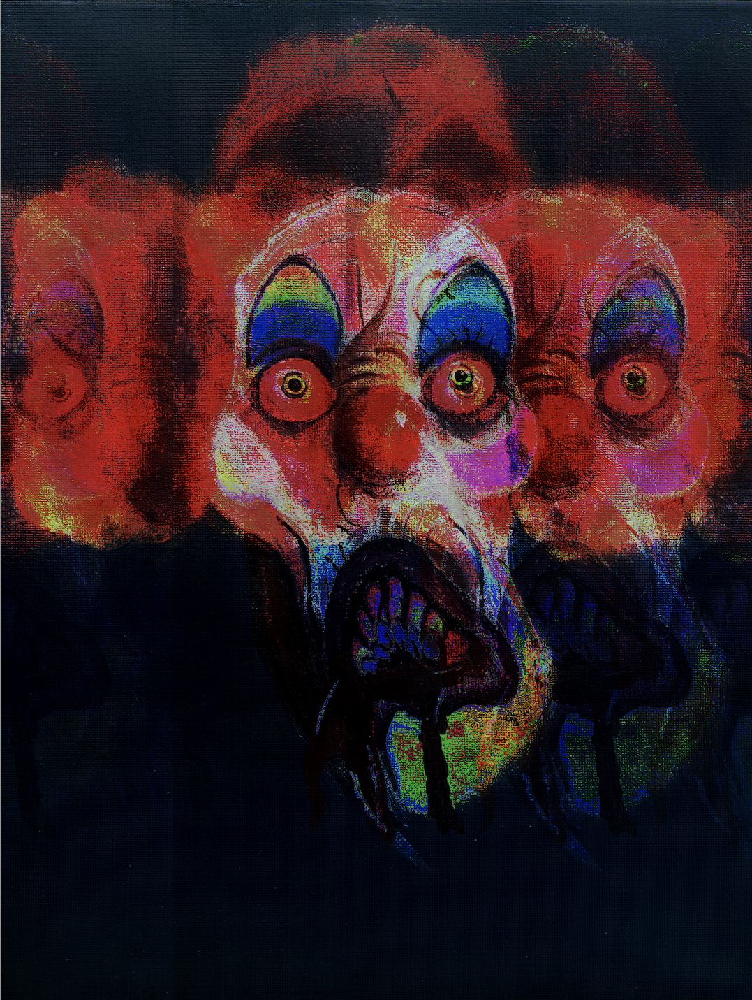
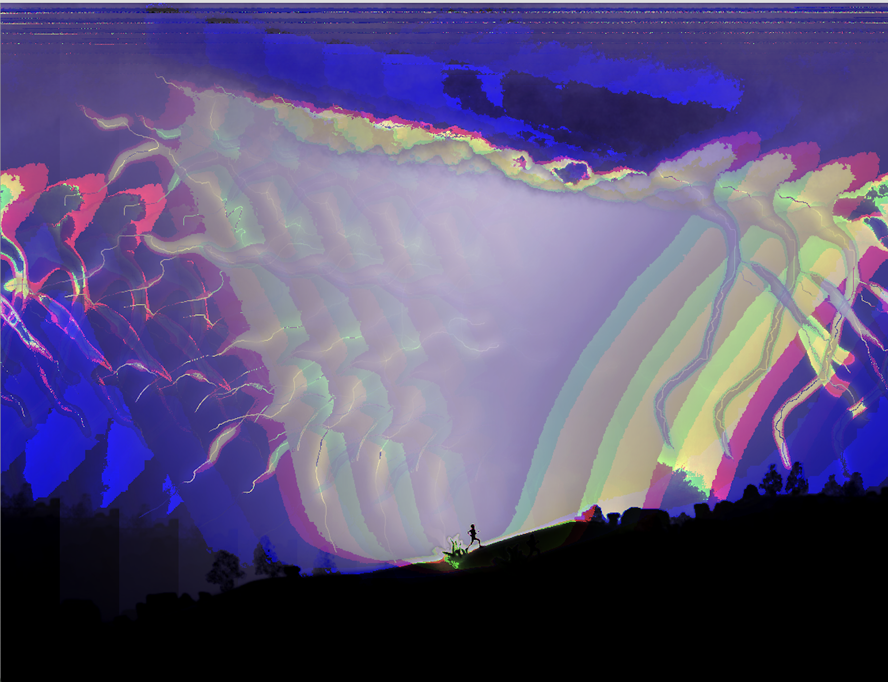
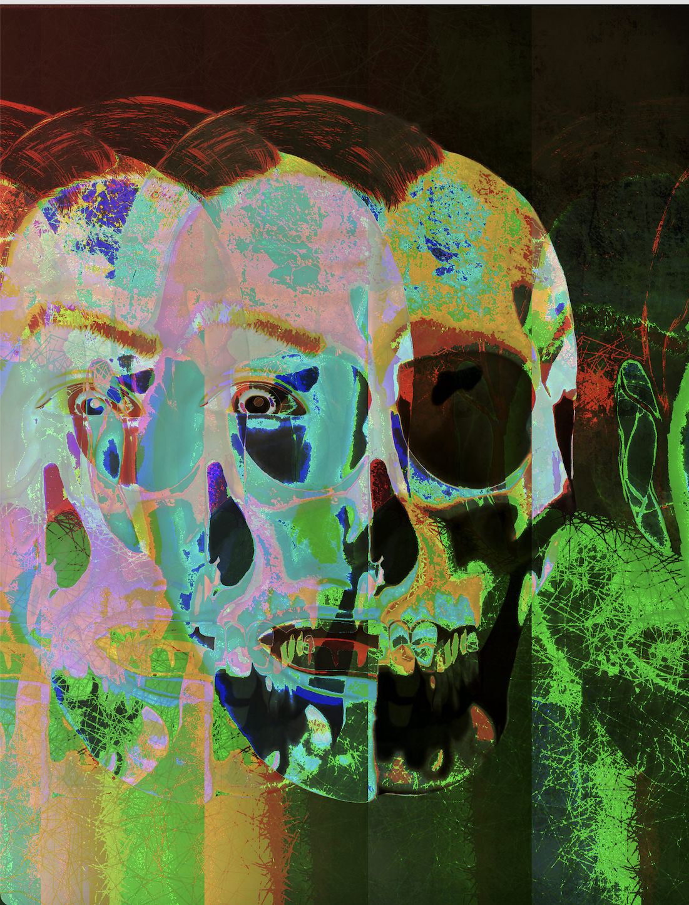
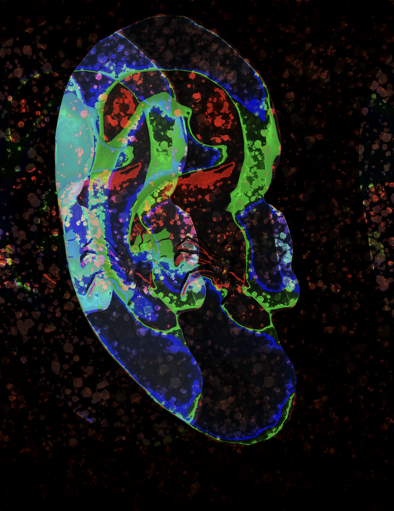

Final Project
For my final project, I decided to use the glitching method to manipulate some art pieces that I have done that concentrate on common fears and phobias most people have today. I used the software audacity to accomplish project because I would believe that glitching my artwork that is concentrated on common fears and phobias would possibly give my art a different meaning and perspective behind it. Therefore, the connection and reason why I chose to do this type of art for the final project is because it combines two of my favorite things, which is painting, whether its digitally or manually and applying the ability to manipulate in my own way to give my work a different look. Combining these two techniques to create something new is interesting and hopefully can create a new meaning for others.





